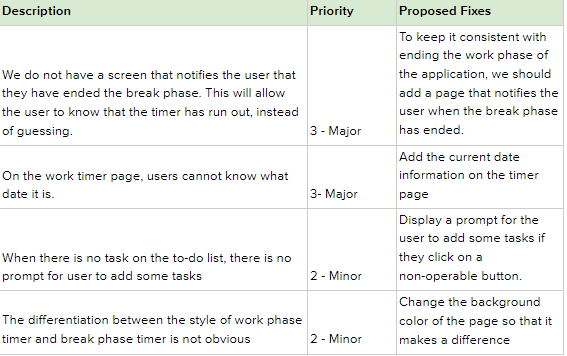
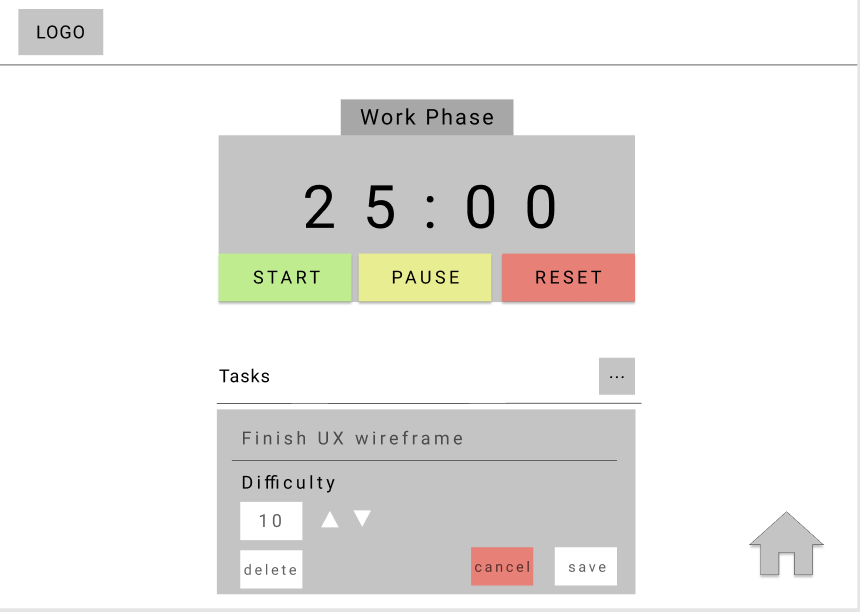
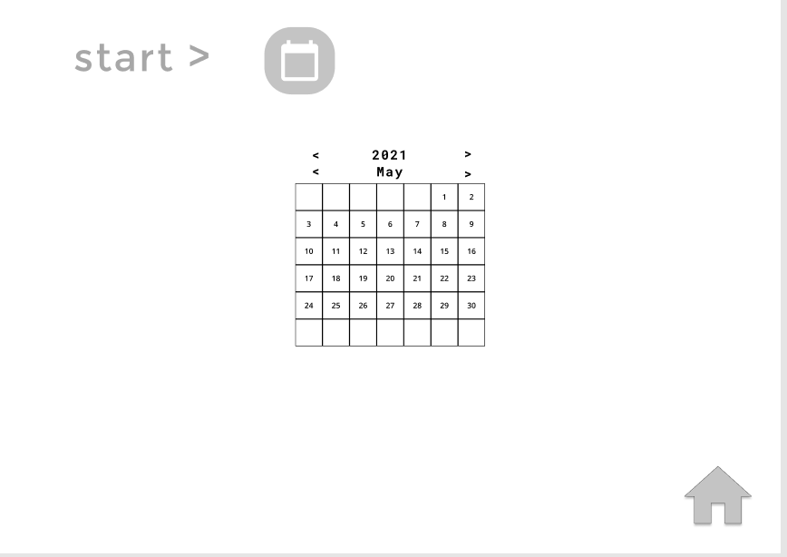
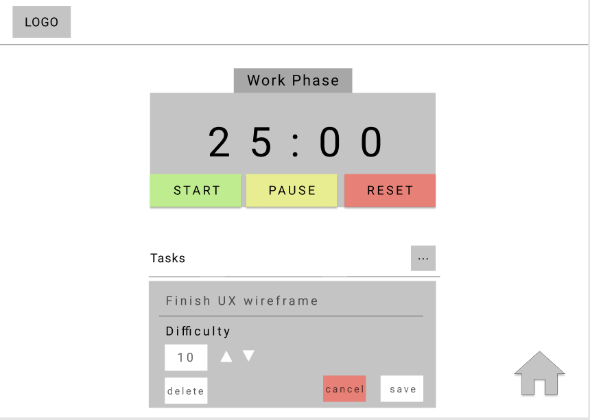
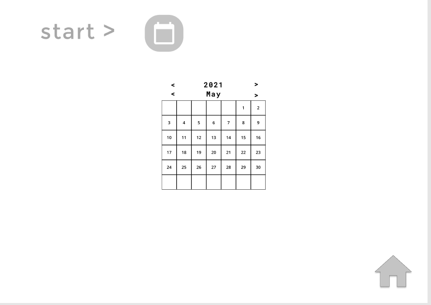

OVERVIEW
During a trip, a group of people often have the need of splitting bills with others. Our project’s current problem is: How can we split bills effectively and accurately, and how can we make our application track user’s every payment in detail to help them better control their total expense? Our group is going to design a spilt bill application, BuckFly. The main function of BuckFly is helping people calculate bills automatically, giving itemized information and the amount each person needs to pay or receive.


RESEARCH METHODS
Reserach Goal
- What people are the potential groups who need to share expense?
- How people split their bills with others?
- What is the inconvenience of the existing split billing scheme?
Competitive Analysis
We looked into six different bill splitting applications as our potential competitors of the problem statement. These applications have different focus on the bill splitting, some of them focus more on dining out and some of them integrated within the banking system. We analyzed the pros and cons for each competitor.
Splitwise
SplitWise is a tool for people to record bills and shared expenses with housemates, friends, and family... It is not a banking application, and it provides a lot of features for splitting expenses.
Settle Up
Settle Up keeps track of your personal or group expenses. It is designed for travelers, roommates, family members, etc.

Venmo
Venmo is an application for users to not only request or receive payments from others but also do some investments, such as buying bitcoin on the market. Venmo also has more sense of social media and provides a lot of related features.

Zelle
Zelle functions more like a built-in service in your bank application instead of an individual application. Zelle is easy to use, fast, and probably the most popular way to split the money with your friends as it has been embedded into almost bank applications available in the US.
Tab
Tab is a bill splitting application, the main functionality is splitting bills between friends. Users can take a picture of the receipt, then tap and claim the item they bought or ordered. The application would calculate the tax and tip for the users.
Plates by Splitwise
Plates is an application designed especially for dining out, but available only on the Apple store. It supports the split with up to 10 people. Users need to enter the price of each dish, drag their own item to their plates, and then split the shared items.
Interviews & Insights
1. People don't like to spend too much time to entering bills into their
smartphone.
People who are under 40 with active bill-splitting needs usually
use digital note-keeping tools to maintain bill records. But they
usually feel it tedious if it takes them more than 30 seconds to
create a new transaction every time, let alone a lot of typing work
required. The interviewees we have constantly mentioned they wish there
is a way to note bills quickly and without taking too much effort.
2. Managing bills alone for large groups is a terrible experience.
It is terrible to manage all bills for one person who was elected and
responsible to record and calculate expenses for the group. The elected
person might make mistakes or omissions that cause other people’s concerns.
Therefore, if everyone in the group can participate in the process of
recording and calculating the expenses, everyone is not required to do much
and can spread the responsibility evenly among everyone.
3. Reminding others to pay you back is often awkward.
People who pay bills for a group often want reminders in some way
to remind the group when some group members fail to pay the bill in
a certain period of time. So that the people who pay the bills in
advance could get their money back in time.
Storyboard
We created a Storyboard that a group of people go out to travel. One of the group members choose the rental car for the group, and used his own credit card to pay the rental fee for the whole group. He is really unhappy when spending this large amount of money and other group members haven't paid him back.
Persona
DESIGN PROCESS
We first brainstormed to simulate different workflows based on the insights and user stories we concluded previously. Then discussed the wireframes we needed and create the prototype on Figma. After that, we applied Nielsen’s 10 Heuristics rules to analyze our prototype, which allowed us to discover and evaluate potential usability issues.
Our Product Prototype
After creating the wireframes, we each had 2 participants perform several tasks on the wireframes as part of our user evaluation process to find issues. These issues were used to improve the fidelity of the wireframe into a higher-fidelity prototype, as shown below. The tasks the users were asked to perform were a mix of broad reflective tasks and specific goal-oriented tasks:
- Set up your user account, including activities and distractions.
- While on the Work Timer Original State page, what do you think about the setup process?
- Could you start, stop, and reset the timer? After that, try to enter the break phase.
- While on the Work Timer Original State page, could you take a look at the page in front of you and tell me what you can do on this page?
- Could you please add one task to the to-do list, try to change its information, give it a difficulty of 10, then delete the task?
Evaluations
Based on the findings of the user evaluations, we compiled a list of usability issues, which we then fixed in our wireframe, and used the result to construct our high-fidelity prototype. After that, we individually compiled our own list of usability issues based on the Nielsen Norman Group’s 10 Usability Heuristics for User Interface Design scale from 0-4 and fixed the most important issues for our final prototype.
Final Prototype
SOLUTION
After extensive user research, ideation, usability testing, and iterations, we aimed to design a system that helps people stay focused while they are working, while guiding them to stay productive while they're taking a break. Our goal can be achieved by implementing the Pomodoro technique, a technique that uses a timer to break down work into intervals, traditionally 25 minutes in length, intervened with short breaks. During the break period, activities will be recommended for users to do with our state-of-the-art recommendation system. The activities can be either defined by users themselves or randomly suggested by our application.

Break down work into intervals of 25 minutes, which are separated by 5 minutes of break.

Our app allows users to create a list of distractions and we will stop users from doing those activities.
 



Our app also includes features of other traditional time management tools, like calendar, reminder, and alarm clock
REFLECTION
As a team, we worked well together for every milestone and design process. We took advantages of teammate's idea during researches and read other teammate's report to help us perform better in the next step. We encouraged each other when met difficulties such as narrowing down interview questions and consolidating insights. We are proud of our work and achievement in these 11 weeks. We are also grateful to Professor Matt and TAs who help us learn this much.
ACKNOWLEDGEMENTS
Huge thanks to Professor Matt, TA Ethan Vu, and TA Yang Yue!
We could not have this UX design project done without your help
throughout this quarter.
Can Wang: I am very thankful to Professor Matt and TAs for helping me so much. I also really appreciate my teammates, randomly assigned by Professor Matt and TAs. Joshua is a great teammate. He always takes the burden as a leader in the first half of the spring quarter. Joshua always comes up with great ideas and thanks for pushing us to finish the homework as early as possible. Yin-Jui is an excellent teammate, who teaches me a lot during the spring quarter. He is my best friend now. Finally, I still want to thank Professor for connecting us magically.
Ruokun Xu: I am grateful to Professor Matt for his teaching this quarter. At the beginning of the course, I had some doubts about Prof.Matt's requirements because I feel individual creativity is limited by those requirements. But with Prof. Matt's guidance, I understood the meaning of the design requirements and logic that Prof.Matt wanted us to understand. Some things are not as naive as I thought. Prof.Matt taught me that a scientific design flow helps us blueprint superior user experiences.
Xinnan Wu: I really want to say thank you to Professor Matt, TA Ethan and Yang for the supports and guidance you gave to me and our team this quarter. I still remembered in the first lecture I did not what Figma is when other classmates were discussing this UX design tool. But after one quarter's lecture and projects, I am able to getting a peek of what UX designers are doing in the real world and the tools they use for design and analysis. Thank you for making the knowledge easy to understand and accessible to us.